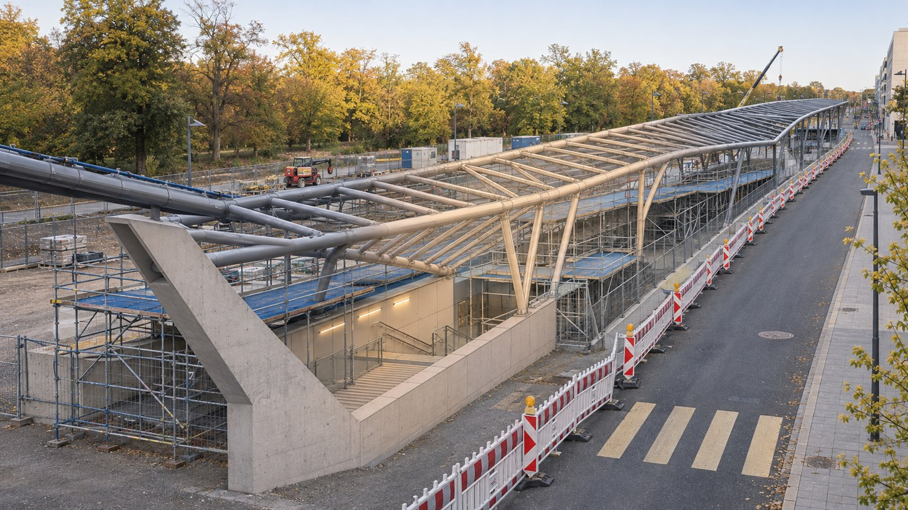

Our Work · Illustratives Anwendungsszenario
Strategische Personalplanung
Acht Menschen arbeiten projektübergreifend. Die Abteilungsleitung vergleicht eine neue Leitung mit 39 Wochenstunden mit einer internen Lösung von 16 Stunden. Im zweiten Szenario bleiben 23 Stunden für das Herkunftsprojekt. Sie prüft die Auswirkungen auf sechs Ziele und gibt eine Variante zur weiteren Entscheidung.

Die Entscheidung im Detail
Digital Teams as a Service
Zeit bis zum arbeitsfähigen Team und Anteil der Aufgaben mit Verantwortlichem und Vertretung.
Zum AngebotTeamauftrag besprechen
Bringen Sie ein Arbeitspaket, eine offene Entscheidung oder einen Ressourcenengpass mit.
Gespräch mit Higherd anfragenProduktdemo öffnen